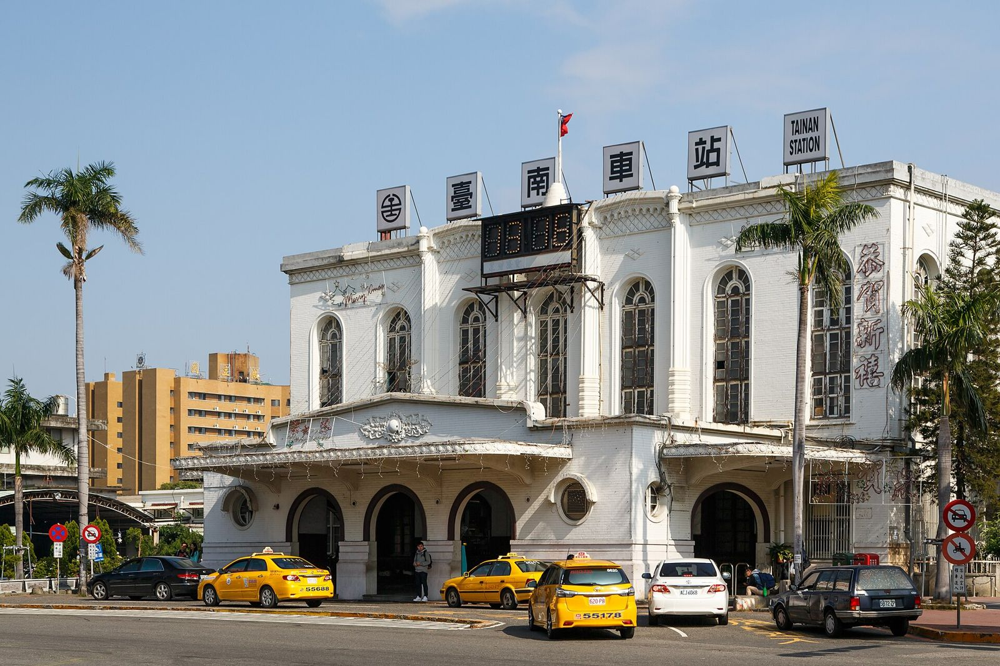
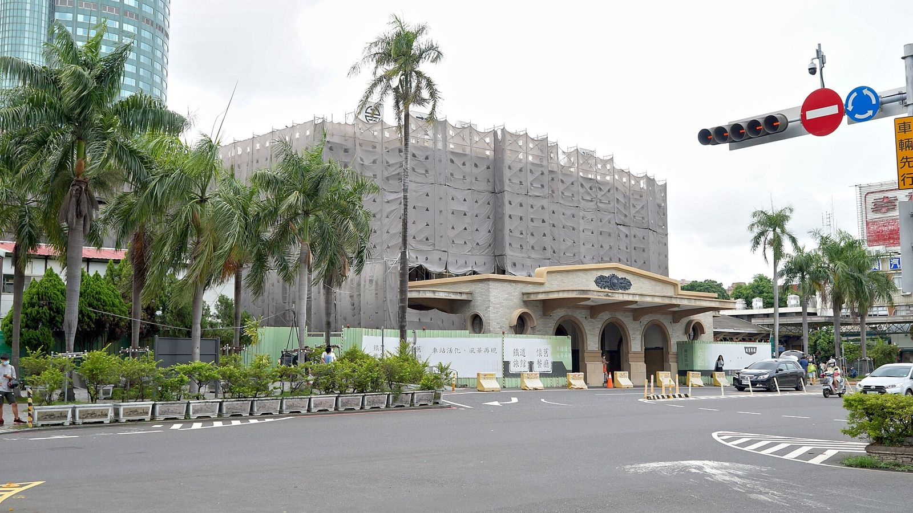

타이난역 지하화 후 이용법, 출구 3곳과 옛 역사는?
기차는 이제 지하로 다녀요. 출구를 잘 고르면 걷는 거리가 확 줄어듭니다.
게시
타이난역은 2026년 10월 17일부터 지하역으로 바뀌었고, 출구는 1번(北門路 옛 역사 쪽)·2번(前鋒路·大學路 교차로)·3번(前鋒路·小東路 쪽) 세 곳이에요. 어느 출구로 들어가든 B1 대합실의 개찰구를 지나 B2 승강장으로 내려가는데, 옛 역사 쪽 1번 출구는 임시 육교를 건너야 해서 걷는 거리가 가장 길어요. 짐이 많거나 기차 시간이 빠듯하면 2번이나 3번 출구를 쓰는 편이 편합니다.
1936년에 지은 옛 역사는 헐리지 않고 남아 지금도 1번 출구로 드나들 수 있어요. 교통부 보도자료와 타이난시 교통국의 동선 안내를 기준으로, 처음 가는 사람이 헷갈리기 쉬운 부분만 골라 정리했습니다.
01 · 타이난역 지하화 후 출구 3곳 한눈에 보기 (2026년 10월 기준)
| 출구 | 위치 | 알아둘 점 |
|---|---|---|
| 1번 | 北門路, 옛 역사 앞 | 옛 1번 승강장을 따라 걷다가 임시 육교로 선로를 건너요. 걷는 거리가 가장 길어요 |
| 2번 | 前鋒路·大學路 교차로 | 하부 광장(下沉式廣場)을 지나 B1 대합실 남쪽으로. 매표소·안내데스크·상점이 여기 모여 있어요 |
| 3번 | 前鋒路, 小東路 쪽 | 에스컬레이터·엘리베이터로 B1 대합실 북쪽에 바로 닿아요. 매표소 있음 |
세 출구 모두 B1 대합실에서 개찰구를 통과한 뒤 B2 승강장으로 내려가요. 타이난시 교통국 안내에 따르면 북쪽 방향(타이중·타이베이 쪽)은 2번 승강장, 남쪽 방향(가오슝 쪽)은 1번 승강장이에요. 예전처럼 옛 역사에서 바로 승강장으로 나가던 때보다 걷는 시간이 늘었으니, 처음 이용한다면 출발 시각보다 여유 있게 도착하세요.

02 · 1번 출구(옛 역사 쪽)로 들어갈 때
옛 역사로 들어가요 北門路 쪽 옛 역사 출구가 그대로 1번 출구예요. 구시가나 역 앞 로터리 쪽에서 오면 가장 가까운 입구입니다.
옛 1번 승강장을 따라 걸어요 교통국 안내에 따르면 옛 1번 승강장의 6~7호차 위치까지 걸어가면 임시 육교(棧橋)가 있어요.
육교로 선로를 건너 하부 광장으로 육교를 건너면 새 역 광장이 나오고, 하부 광장(下沉式廣場)을 거쳐 B1 대합실로 들어가요.
택시·버스 타는 곳은 그대로 1번 출구 쪽 택시 승차장, 오토바이 픽업 구역, 버스 정류장은 지하화 전과 같은 자리예요.
03 · 2번·3번 출구가 편한 경우
표를 사거나 물어볼 게 있다면 2번 매표소, 안내데스크, 상점, 수유실, 기도실 같은 주요 시설이 B1 대합실 남쪽 2번 출구 쪽에 모여 있어요.
짐이 많다면 3번 3번 출구는 에스컬레이터나 엘리베이터로 B1 대합실 북쪽에 바로 내려가요. 이쪽에도 매표소가 있어요.
택시·차로 내린다면 前鋒路 쪽 2·3번 출구 앞에 택시 승차장이 있고, 승용차 임시 정차 구역이 새로 생겼어요. 3번 출구 옆에는 지하 주차장도 있어요.
한국어 안내 표지 교통부에 따르면 새 역의 안내 표지는 중국어·영어·일본어·한국어 4개 언어로 되어 있어요.

04 · 1936년 옛 타이난역 역사, 지금은 어떻게 쓰나
지금 남아 있는 옛 역사는 1936년에 완공된 2대 타이난역으로, 국정 고적이에요. 지하화 뒤에도 헐지 않고 새 지하역과 이어 쓰는 방식이라, 옛 역사로 들어가 새 역 승강장까지 걸어갈 수 있어요. 다만 앞으로 옛 역사와 옛 승강장 복원 공사가 이어질 예정이라 내부 동선이나 개방 구역은 단계적으로 바뀔 수 있어요.
역 앞 광장은 공사 중 보도에 따르면 옛 역사 앞 광장 공사는 2027년 말 완공이 목표이고, 새 픽업 구역은 2027년 4월, 버스 대기 공간은 2027년 하반기에 문을 열 예정이에요.
매장·보관함 대만철도는 새 역에 편의점, 드러그스토어, 식음료 매장을 들이고 다국어 화면의 짐 보관함을 두었다고 밝혔어요. 매장은 2026년 말까지 늘려 갈 계획이라 지금 있는 가게는 현장에서 확인하세요.
새 역은 더 늘어나요 교통부 발표로는 같은 지하 구간에 린썬(林森)역이 2029년 말, 남타이난(南臺南)역이 2030년 말에 생길 예정이에요.
05 · 자주 묻는 질문
타이난역 지하화는 언제부터예요? 2026년 10월 17일 오전 6시부터 기차가 지하로 다니고, 같은 날 새 지하역이 문을 열었어요.
옛 타이난역 건물로 아직 들어갈 수 있나요? 네, 2026년 10월 기준 옛 역사 쪽이 1번 출구로 쓰여요. 다만 임시 육교를 건너 새 역으로 가야 해서 걷는 거리가 길어요.
타이난역에서 가오슝 가는 기차는 몇 번 승강장이에요? 남쪽 방향은 B2층 1번 승강장, 타이중·타이베이로 가는 북쪽 방향은 2번 승강장이에요.
표는 어디서 사요? B1 대합실 남쪽(2번 출구 쪽)과 북쪽(3번 출구 쪽)에 매표소가 있어요. 개찰구는 B1에 있어요.
기차 시간 전에 얼마나 일찍 가야 해요? 정해진 시간은 없지만, 타이난시는 예전보다 걷는 시간이 늘었으니 처음 이용하면 여유 있게 오라고 안내하고 있어요.
타이난에서 다른 도시로 이동할 계획이라면 타이중-타이난 일반 기차 vs 고속철과 타이난에서 아리산 당일치기를, 근교 박물관까지 간다면 치메이 박물관 입장권과 근처 맛집도 함께 보세요. 역에 내려 먹을 곳은 타이난 맛집 지도와 타이난 노점 맛집에서 고르면 되고, 첫 끼로 우육탕을 먹는다면 아차이 우육탕(阿財牛肉湯)이 지도에 있어요. 구시가 볼거리는 타이난 꼭 가볼 곳에 모아 두었습니다.
지도에서 타이난 맛집도 확인해보세요
역에 내려 바로 갈 타이난 노점 맛집을 지도에서 미리 찜해 두세요.